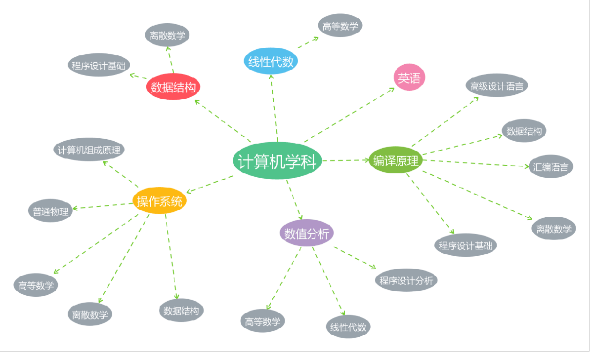

| 年级 | 目标期望 | 学习计划 | 生活规划 |
|---|---|---|---|
| 大一 | 快速融入适应大学生活，在分流中以优秀的学习成绩选到自己喜欢的专业（计算机和智能电气），四六级600+，形成规律锻炼的好习惯 | 大一上学期以高等数学和线性代数为重心，认真听课、记笔记、课下认真完成作业并及时复习，考前进行总结整理。长期贯穿保持英语的学习、维持敏感度与能力。大一会学习大部分的通识类课程，不能放松，根据自己兴趣选择，认真听课、完成任务，全面培养自己的能力、增长知识 | 统筹规划好学习与休息、课余活动的时间，尽好团支书的职责、开展团课、组织生活会等等；参与多彩社团活动，多做志愿服务，按时规律练习吉他、口琴；积极锻炼身体，加入跑者俱乐部后争取做到每日跑步，参与例跑 |
| 大二 | 能完整跑下半程马拉松，体测争取90+，引体向上15+。参加数模竞赛等竞赛得奖，获得奖学金 | 分流后更专业细化的知识，脚踏实地打好基础，继续钻研更深更高的层面。同时英语学习不能放下，进一步学习雅思托福。并花费更多时间在数模等竞赛上 | 大二学习任务会比较重，但更要保持住大一养成的按时锻炼的好习惯，积极锻炼身体，规律作息。继续坚持练习吉他 |
| 大三 | 希望能有出国留学的机会（在考虑中没有很确定）。获得国家奖学金 | 全神贯注投入到学习中，冲刺阶段，为保研相关工作任务做准备 | 依然要积极参加志愿活动，按时锻炼、跑步不能断，按时作息，按时练习吉他 |
| 大四 | 争取拿到保研的资格，健身身材达到自己的期望标准（不太好具体描述数值），能完整跑下全程马拉松 | 养阅读的兴趣和习惯、陶冶情操，继续进行科研，为研究生学习做准备 | 不是很了解大四的生活，但希望自己能够保研，之后放更多的时间在锻炼健身、练习吉他上，培养下自己的艺术细胞，增强体魄，希望能参加一些节目的表演。同时继续参加各种志愿活动，服务社会 |